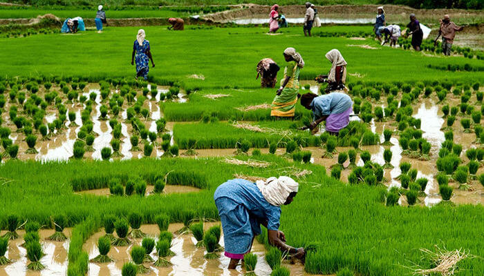
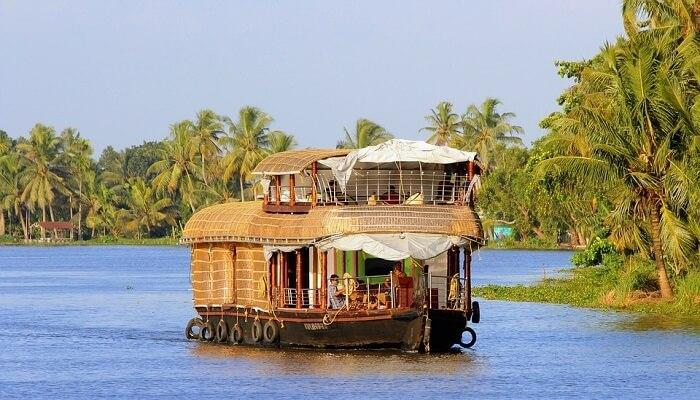
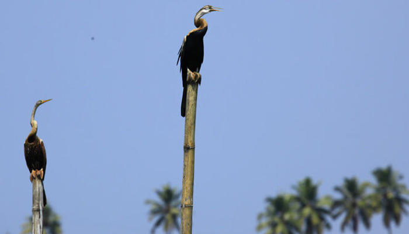

Alleppey, or Alappuzha, is often referred to as the Venice of the East by travelers, and rightly so. The experiences it offers to travelers leave them with a yearning to visit Alleppey, a splendid nature’s paradise, again and again. We’re listing down the top places to visit in Alleppey, so that your escapade is nothing less than magnificent. Read on to know about these amazing places to visit in Alleppey.
Top Places To Visit In Alappey
Kuttanad: To Witness Below The Sea Level Farming
Popularly known in the South as the Rice Bowl of Kerala, the village of Kuttanad is one of the few places in the world where farming is carried out below sea level. Its vast picturesque paddy fields, the various activities of toddy tapping, duck farming, coconut cultivation, & fishing, allure tourists from all over the world. It is considered one of the best tourist places in Alleppey because of its famous recipes for spicy curries and finger-licking delicacies.
Vembanad Lake: The Second Largest Lake In Kerala

Spanning over several districts of the state, Vembanad Lake is the second largest lake of Kerala. It is also a major site of tourist attraction in Alleppey and has a number of resorts on its banks. Lying in the heart of Kerala backwaters, the lake is famous for its scenic beauty. If one is just passing by the town and looking for places to visit in Alleppey in 1 day, then Vembanad Lake makes for an amazing spot to visit.
Kumarakom Bird Sanctuary: To Witness Some Beautiful Birds

One of the most famous places to visit in Alappuzha, the Kumarakom Bird Sanctuary is at the banks of the popular Lake Vembanad and one can witness many beautiful birds from Siberia, Himalayas and around the world, here. If you like bird watching then this is the place for you. Siberian Stork, Heron, Egret and Teal are some of the birds you can spot here.